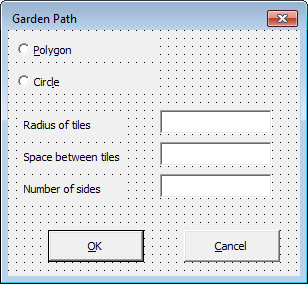

Properties define the behavior and appearance of a control or user form.
The Properties window allows you to modify the properties of a control or user form. Selecting a an object displays its properties, while selecting more than one object displays the properties they have in common.
Working with the Properties Window
In the following steps, you learn to work with the Properties window.
- In the VBA IDE, one the menu bar, click View menu
 Properties Window or press F4 to display the Properties window.
Properties Window or press F4 to display the Properties window. - On the Properties window, click the Objects drop-down list to select the user form or a control on the user form.
- Optionally, click the Alphabetic or Categorized tabs to control the display order of the properties.
- In the Properties grid, select the property you want to work with and specify a new value.
Setting the Properties of the Option Button Controls
In the following steps, you set the properties of the two option buttons placed on the user form.
- On the Project window, double-click the UserForm1 module to display it in the form editor window.
- In the form editor window, select the control labeled OptionButton1.
- On the Properties window, change the following properties for the control:
- (Name) = gp_poly
- Accelerator = P
- Caption = Polygon
- ControlTipText = Polygon Tile Shape
- In the form editor window, select the control labeled OptionButton2.
- On the Properties window, change the following properties for the control:
- (Name) = gp_circ
- Accelerator = I
- Caption = Circle
- ControlTipText = Circle Tile Shape
- Save the project.
Setting the Properties of the Label Controls
In the following steps, you set the properties of the three labels placed on the user form.
- On the Properties window, change the following properties of the control labeled Label1:
- (Name) = label_trad
- Caption = Radius of tiles
- TabStop = True
- On the Properties window, change the following properties of the control labeled Label2:
- (Name) = label_tspac
- Caption = Space between tiles
- TabStop = True
- On the Properties window, change the following properties of the control labeled Label3:
- (Name) = label_tsides
- Caption = Number of sides
- TabStop = True
- Save the project.
Setting the Properties of the Text Box Controls
In the following steps, you set the properties of the two text boxes placed on the user form.
- On the Properties window, change the following properties of the control labeled TextBox1:
- On the Properties window, change the following properties of the control labeled TextBox2:
- On the Properties window, change the following properties of the control labeled TextBox3:
- Save the project.
Setting the Properties of the Command Button Controls
In the following steps, you set the properties of the two command buttons placed on the user form.
- On the Properties window, change the following properties of the control labeled CommandButton1:
- (Name) = accept
- Accelerator = O
- Caption = OK
- ControlTipText = Accept the options
- Default = True
- On the Properties window, change the following properties of the control labeled CommandButton2:
- (Name) = cancel
- Accelerator = C
- Cancel = True
- Caption = Cancel
- ControlTipText = Cancel the operation
- Save the project.
Setting the Properties of the User Form
In the following steps, you set the properties of the user form.
- Select the user form; click in an area on the user form that doesn't contain a control.
- On the Properties window, change the following properties of the user form:
- (Name) = gpDialog
- Caption = Garden Path
The form should look similar to the following illustration:

- Save the project.